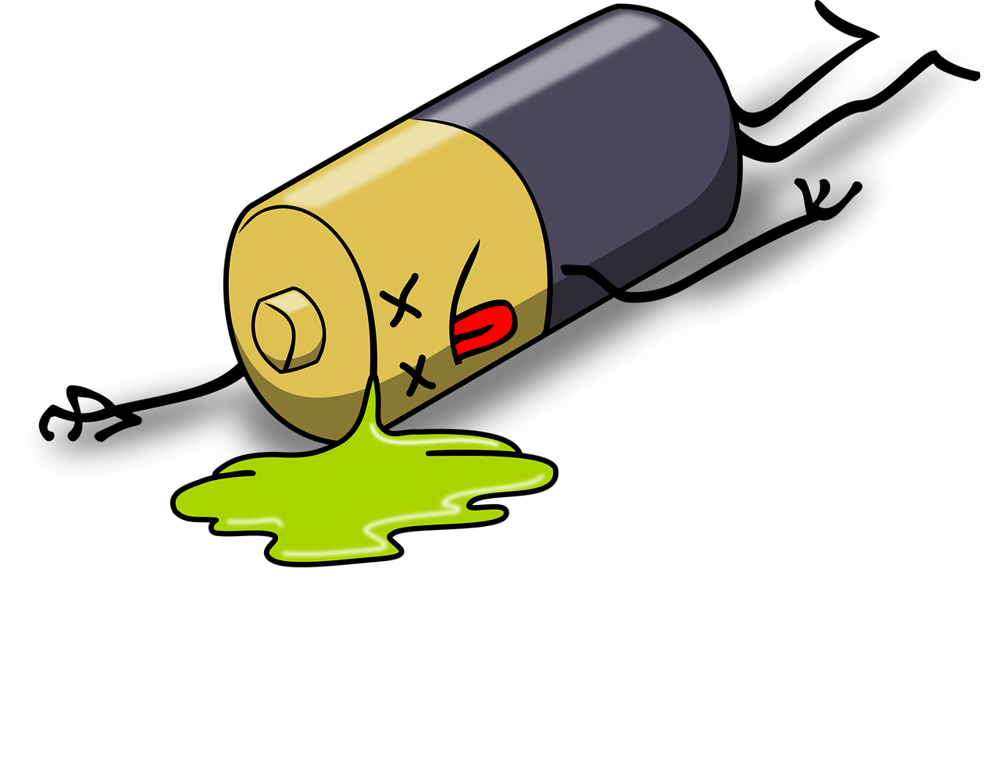

Green Otago
E-Waste
What is E-waste
E-waste is unwanted or broken electonics. This is not limited to appliances such as Tv's or computers but includes Whiteware aswell.

Some of the components can be hazardous to the enviroment. Hazardous chemicals in batterys for example can leach out into the soil which can contaiminate drinking water.
If you have unwanted electronics consider selling them or donating them instead of throwing them away. This helps keep hazardous materials out of landfils, and maybe even net you a little bit of money :)
If your electronics are broken, then instead of throwing them in the landfill take them to a resource recovery centre. E-waste can contain precious resources that can be easily recycles and used for other things.